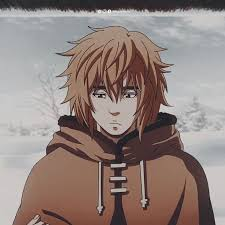
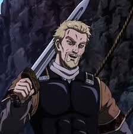
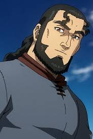
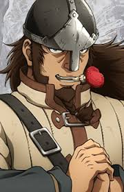

Vinland Saga
Released: July 8, 2019
Genre: Action, Historical, Drama
Set during the age of Vikings, Vinland Saga follows Thorfinn, a young warrior driven by revenge after the murder of his father. As he grows up among mercenaries, he struggles between vengeance and finding true meaning in life.
The series explores war, honor, and redemption in a brutal yet deeply emotional historical setting.
Cast

Thorfinn
Voice: Yuto Uemura

Askeladd
Voice: Naoya Uchida

Thors
Voice: Kenichirou Matsuda

Canute
Voice: Kensho Ono
Epic Scenes
- Thorfinn vs Thorkell (Duel in the Forest)
- Askeladd’s Last Stand
- Thors vs Entire Viking Crew
- Canute’s Speech
To watch Full Anime: Vinland Saga